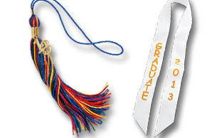

Graduation Tassels and Sashes

Preschool and kindergarten students will remember graduation day with a tassel and sash indicating their graduation year. Pick your tassel color that coordinates with your cap and gown or mix and match. Include a sash to complete your graduation ensemble. Choir sashes are also available.
Kindergarten graduation packages are a great way to get everything you need.